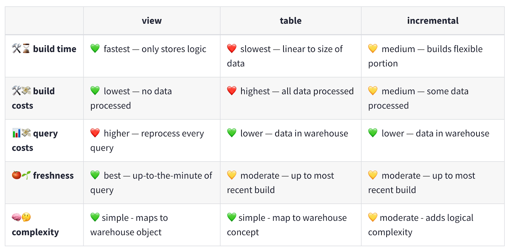

dbt (data build tool)¶
Day 1¶
What is dbt?¶
dbt is a SQL-first transformation tool that lets teams quickly and collaboratively deploy analytics code while following software engineering best practices like modularity, version control, CI/CD, and documentation. This allows your data team to safely develop and contribute to production-grade data pipelines.
Data modeling in the context of dbt¶
In the context of dbt, data modeling refers to the process of organizing data in a structured and efficient manner to facilitate data analysis and decision-making. Data models in dbt serve as blueprints for transforming and organizing your raw data into valuable insights. Data models in their final form are usually a representation of a business or program area and live as tables or views in your data warehouse.
Data layers (staging, intermediate, marts)¶
Data layers represent a systematic approach to data modeling by organizing data into distinct phases. dbt does a particularly great job of explaining best practices to structuring your project and data with naming conventions, example code, and reasoning on such practices in this guide. We’ve summarized it below, but still recommend a thorough read of dbt’s guide from which the content below stems.
- Staging
- The staging layer is the initial point of contact for your raw data
- Models in the staging layer have a one-to-one relationship with source data ensuring data integrity and providing a reliable foundation for downstream models
- There are very few transformations that happen in this layer. Appropriate ones are:
- Column renaming (e.g. PLACEFP to place_fips)
- Data type casting (e.g. string type to numeric)
- Basic computations (e.g. cents to dollars)
- Staging models are often materialized ephemerally or as views (more about materializations later!)
- Files are prefixed with
stg_and saved in a subdirectory usually named “staging” of the models folder
- Intermediate
- Intermediate models are where you start applying more complex transformations to your data
- This layer is used for data cleansing, feature engineering, and combining data from different sources
- Intermediate models allow you to build modular and reusable transformations following the principles of DRY (Don’t Repeat Yourself)
- Common transformations that happen in this layer are:
- Table joins or unions
- Data aggregations (e.g. using a function like
SUM()) - Data pivots
- Files are prefixed with
int_and saved in a subdirectory usually named “intermediate” of the models folder
- Marts (or Data Marts)
- Marts are the final layer in the data modeling process, representing consumable datasets tailored for specific business or programs needs
- Sometimes called the entity layer or concept layer, to emphasize that our marts are meant to represent a specific entity or concept at its unique grain
- Use plain English to name the file based on the concept that forms the grain of the mart e.g.
incidents.sql,claimants.sql,orders.sql - Wide and denormalized
- Files are saved in a subdirectory usually named "marts" of the models folder
Common table expressions (CTEs)¶
CTEs are widely used as a way to create modular and readable SQL queries. You can think of CTEs as temporary, named data tables within your SQL queries. CTEs facilitate modularity and readability by encapsulating complex subqueries and making them reusable throughout your data models.
Often CTEs are framed as an alternative to SQL subqueries. In dbt-style SQL, CTEs are usually preferable to subqueries for a few reasons:
- They allow you to read code from top to bottom rather than inside out
- They allow for better reuse of intermediate results
- They allow you to give descriptive names to intermediate results
| Subquery | CTE |
|---|---|
|
|
Day 1: Practice¶
Click either link for dbt Cloud or dbt Core practice.
Day 1: References¶
dbt Fundamentals¶
dbt Fundamentals is an online self-paced course on how to use dbt and dbt Cloud. It is broadly similar to the content in this training, and you may find some of the videos from the course helpful to review. We’ve linked to some of the videos below.
Models in dbt¶
Day 2¶
What are all these YAML files?!¶
Broadly speaking, there are two kinds of relations (a relation is a table or view) in a dbt project: “models” and “sources”. “Sources” are your raw, untransformed data sets. “Models” are the tables and views that you create when transforming your data into something. Both of these are described using YAML files.
The YAML files in a dbt project contain the metadata for your relations, both sources and models. They include:
- Documentation
- Configuration
- Data tests
Wait, but what is YAML?¶
YAML stands for “Yet Another Markup Language”. It is a superset of JSON (JavaScript Object Notation) and intended to be a more human readable version, but JSON is still perfectly valid! For example, {“my-key”: 4} is YAML. YAML has support for:
- Key-value pairs (i.e., dictionaries/maps)
- Lists
- Strings, numbers, booleans
It is also absolutely ubiquitous for tool configuration. Tools that are configured using YAML include:
- dbt
- GitHub Actions
- Azure Pipelines
- BitBucket Pipelines
- Kubernetes
- AWS CloudFormation
- Many more!
Indentation is meaningful in YAML. Make sure that you use 2 spaces, rather than tab characters, to indent sections per level of nesting.
YAML dictionaries/maps¶
# In YAML, comments are started with the hashtag # symbol
# Dictionaries/maps are constructed using indentation and the colon ":" symbol
my_dictionary:
a_number: 12
a_string: "hello, world!"
a_boolean: true
a_nested_dictionary:
key: "value"
another_key: "another value"
# Because YAML is a superset of JSON, we can equivalently write:
my_dictionary: {"a_number":12, "a_string": "hello, world!", "a_boolean": true}
YAML lists¶
# Lists are constructed using the dash - symbol
my_list:
- 1
- 2
- 3
- 4
# Because YAML is a superset of JSON, we can equivalently write:
my_list: [1, 2, 3, 4]
YAML strings¶
# YAML strings may be written without quotes "" as long as there is no ambiguity
my_ionary:
a_string: "britt is cool!"
also_a_string: britt is cool
# But omitting the quotes for a string can get you in trouble when the string is ambiguous!
my_dictionary:
# This is interpreted as a number (which is not what we want)
python_version: 3.9
# This would pull in python 3.1 instead of 3.10!
another_python_version: 3.10
# This gets interpreted as a boolean instead of a string!
should_i_eat_lunch: yes
YAML multiline strings¶
# Use the pipe | or right angle bracket > symbol to break up long strings for legibility
long_snippet: |
cotton candy blues
juxtaposed with blushing peaks
postcard-worthy views
another_long_snippet: >
Call me Ishmael. Some years ago - never mind how long precisely -
having little or no money in my purse, and nothing particular to
interest me on shore, I thought I would sail about a little and see
the watery part of the world.
Markdown in YAML¶
# dbt renders description strings as Markdown
a_markdown_string: |
This is rendered as Markdown! So I can use _emphasis_
or **bold text**. I can also include:
- Lists
- of
- items
as well as [URLs](https://github.github.com/gfm/)
Note
Code blocks are designed to display text literally, so Markdown formatting like bolding, italicizing, or headings won't be applied. Hence why you do not see the affect above. However, in dbt which does allow for richer text formatting, applying markdown to your YAML, like we've done above, will work.
Sources and refs¶
Let’s take a look at the source and ref dbt macros. Instead of directly referring to the database, schema, table, and view names, we use the source and ref dbt macros. The syntax for this is to replace the raw names with a template directive like this: {{ source('WATER_QUALITY', 'STATIONS') }}.
The curly braces are a syntax for Jinja templating. The expression within the curly braces is a Python (ish) function which gets evaluated and inserted into the SQL file. There are lots of things we can do with Jinja to help generate our SQL queries, including basic math, custom Python functions, loops, and if-else statements. Most of the time, you will just need to be able to use the source and ref macros.
source()¶
This function creates dependencies between source data and the current model (usually staging) referencing it. Your dbt project will depend on raw data stored in your database. Since this data is normally loaded by other tools than dbt, the structure of it can change over time – tables and columns may be added, removed, or renamed. When this happens, it is easier to update models if raw data is only referenced in one place.
Example: replace RAW_DEV.WATER_QUALITY.LAB_RESULTS with {{ source('WATER_QUALITY', 'LAB_RESULTS') }}.
ref()¶
This function is how you reference a model from another: it allows you to build more complex models by referring to other ones and constructing a data lineage graph. Under the hood this function is actually doing two important things. First, it is interpolating the schema into your model file to allow you to change your deployment schema via configuration. Second, it is using these references between models to automatically build the dependency graph. This will enable dbt to deploy models in the correct order when using dbt run.
Example: Replace stg_water_quality__stations with {{ ref(‘stg_water_quality__stations’) }}.
Why shouldn’t we directly refer to table names?¶
It can be initially confusing to people that we don’t directly refer to the names of the other data models, and instead do it indirectly via the source and ref macros. There are a few reasons for this:
- By explicitly linking your sources and models using the
sourceandrefmacros, you help dbt in constructing a data lineage graph (i.e., which tables depend on which others). This allows you to do things like “rebuild a model and all of its upstream dependencies”, or “test a model and all of its downstream dependents”. - It becomes easier to rename a data source. This can be especially useful if the data source comes to you with unhelpful names.
- Source and refs become context aware. For example, in a development context, your personal development schema is templated into the SQL queries, but in a production context the final production schema is templated in. This allows for safer development of new models.
Data tests¶
dbt ships with 4 “generic” data tests. We recommend giving their data test documentation a thorough read as we only pulled high-level content from it.:
- Not null
- Unique
- Relationships
- Accepted Values
Default test outcomes are:
- Pass: 0 rows found
- Fail: 1+ rows found
dbt example:
models:
- name: orders
columns:
- name: order_id
data_tests:
- unique
- not_null
- name: status
data_tests:
- accepted_values:
values: ['placed', 'shipped', 'completed']
- name: customer_id
data_tests:
- relationships:
to: ref('customers')
data_tests:
- unique:
column_name: "(customer_id || '-' || order_date)"
In dbt you execute tests with either of the following:
- dbt test (tests models only)
- dbt build (builds and tests models)
Sample results from the YAML config above
23:52:21 1 of 4 START test unique_orders__order_id_ ........... [RUN]
23:52:21 2 of 4 START test not_null_orders__order_id_ ......... [RUN]
23:52:21 3 of 4 START test accepted_values_orders__status_ .... [RUN]
23:52:21 1 of 4 PASS unique_orders__order_id_ ................. [PASS in 0.69s]
23:52:21 4 of 4 START test relationships_orders__customer_id_ . [RUN]
23:52:22 2 of 4 PASS not_null_orders__order_id_ ............... [PASS in 0.78s]
23:52:22 3 of 4 PASS accepted_values_orders__status_ .......... [PASS in 0.74s]
23:52:22 4 of 4 PASS relationships_orders__customer_id_ ....... [PASS in 0.57s]
23:52:22
23:52:22 Finished running 4 tests in 0 hours 0 minutes and 2.81 seconds (2.81s).
23:52:22
23:52:22 Completed successfully
23:52:22
23:52:22 Done. PASS=4 WARN=0 ERROR=0 SKIP=0 TOTAL=4
Test severity can be configured like so:
- error: test will pass or fail (default)
- warn: test will pass or warn
Tests with a severity of “error” can also have warnings configured.
dbt example:
columns:
- name: controller_id
data_tests:
- not_null
- name: controller_type
data_tests:
- not_null:
config:
severity: warn
Thresholds can be configured with error_if and warn_if options. The default is error_if: > 0
When working with Snowflake you can use any supported comparison syntax like so: = 0, <> 15, or between 10 and 20.
Also, note that error_if will be ignored if severity is warn!
dbt example:
columns:
- name: controller_id
data_tests:
- not_null
- name: controller_type
data_tests:
- not_null:
config:
severity: warn
- name: district
data_tests:
- not_null:
config:
error_if: ">10"
warn_if: ">5"
For people who are familiar with transactional databases, you might be curious why tests like this are ever needed (i.e., why don’t we handle it using constraints?). In a traditional transactional database like postgres or SQL Server, you can have a uniqueness constraint on a column. Snowflake does not respect uniqueness constraints and most OLAP databases do not either. Primary keys and foreign keys are examples of unique columns that are respected in OLTP databases that are not in OLAP databases. If you're interested the is more reading available on this topic.
Day 2: Practice¶
Click either link for dbt Cloud or dbt Core practice.
Day 2: References¶
Sources¶
- Modularity and ref functions
- What are sources?
- Configure and select from sources
- Documenting sources
Testing¶
Day 3¶
Let refresh our memory on data layers for intermediate models. Let's also revisit common table expressions (CTEs)
CTE examples¶
-- Let's go from writing our code like this...
select
"station_id",
"latitude",
"longitude",
"county_name"
from {{ source('WATER_QUALITY', 'lab_results') }}
-- To writing our code like this
with source as (
select * from {{ source('WATER_QUALITY', 'lab_results') }}
),
lab_results as (
select
"station_id",
"latitude",
"longitude",
"county_name"
from source
)
select * from lab_results
Here’s another example of a more complex, multi-stage CTE query.
Materializations¶
Materializations refer to the way dbt executes and persists the results of SQL queries. It is the Data Definition Language (DDL) and Data Manipulation Language (DML) used to create a model’s equivalent in a data warehouse.
Understanding the options for materializations will allow you to choose the best strategy based on factors like query performance, data freshness, and data volume. There are four materializations used in dbt: view, table, incremental, and ephemeral. We used dbt docs as our main source for most of the materialization descriptions below.
View¶
- Views return the freshest, real-time state of their input data when they’re queried, this makes them ideal as building blocks for larger models.
- Views are also great for small datasets with minimally intensive logic that we want near real time access to.
- Staging models are rarely accessed directly by our end users.
- Staging models need to be always up-to-date and in sync with our source data as building blocks for later models so we’ll want to materialize our staging models as views.
- Since views are the default materialization in dbt, we don’t have to do any specific configuration for this.
- Still, for clarity, it’s a good idea to go ahead and specify the configuration to be explicit. We’ll want to make sure our dbt_project.yml looks like this:
models:
jaffle_shop:
staging:
+materialized: view
Table¶
- Tables are the most performant materialization, they return transformed data when queried with no need for reprocessing.
- Tables are also ideal for frequently used, compute intensive transformations. Making a table allows us to freeze transformations in place.
- Marts, like one that services a popular dashboard, are frequently accessed directly by our end users, and need to be performant.
- Can often function with intermittently refreshed data, end user decision making in many domains is fine with hourly or daily data.
- Given the above properties we’ve got a great use case for building the data itself into the warehouse, not the logic. In other words, a table.
- The only decision we need to make with our marts is whether we can process the whole table at once or do we need to do it in chunks, that is, are we going to use the table materialization or incremental.
Incremental¶
- Incremental models build a table in pieces over time, only adding and updating new or changed rows.
- Builds more quickly than a regular table of the same logic.
- Initial runs are slow. Typically we use incremental models on very large datasets, so building the initial table on the full dataset is time consuming and equivalent to the table materialization.
Sources: Incremental models in-depth and Available materializations
A comparison table¶

Source: Available materializations
Materializations golden rule¶
- 🔍 Start with a view. When the view gets too long to query for end users,
- ⚒️ Make it a table. When the table gets too long to build in your dbt Jobs,
- 📚 Build it incrementally. That is, layer the data in chunks as it comes in.
Ephemeral¶
Ephemeral models are not directly built into the database. Instead, dbt will interpolate the code from this model into dependent models as a CTE. Use the ephemeral materialization for:
- Light-weight transformations that are early on in your DAG
- When they are only used in one or two downstream models, and
- Do not need to be queried directly
✅ Can help keep your data warehouse clean by reducing clutter
🚫 Overuse of ephemeral materialization can make queries harder to debug
Source: Materializations
Where to configure materializations¶
You can configure models in dbt_project.yml, the YAML file within the corresponding model’s folder, or within a specific model itself. Confusing thing about dbt configuration: the syntax and format change depend on where you use it!
# in the dbt_project.yml file...
models:
dse_analytics:
staging:
+materialized: view
intermediate:
+materialized: view
marts:
+materialized: table
# the YAML file within the corresponding model’s folder
version: 2
models:
- name: int_state_entities__active
materialized: table
description: This is a sample description.
columns:
- name: name
description: Name of the entity
-- within a specific model itself
{{
config(
materialized='view'
)
}}
select ...
Day 3: Practice¶
Click either link for dbt Cloud or dbt Core practice.
Day 3: References¶
Materializations, Jinja, and dbt Models¶
- dbt materialization and performance considerations
- Jinja tutorial: Use Jinja to improve your SQL code
- Re-watch the second and third video from Day 1: Models in dbt
Day 4¶
dbt Docs¶
A key feature of dbt is the automated generation of documentation and lineage from your project. The framework reads your SQL models and YAML configuration files and produces a static HTML document from them. This documentation can then be hosted in a number of places, including dbt Cloud, GitHub Pages, or Azure Static Web Apps. Depending on platforms we are using for the project, we will demonstrate dbt docs using one of the following:
- Hosted in dbt Cloud. This can be useful if you are writing docs in a branch and want to visualize how they are rendered.
- If we are using GitHub, we’ll demonstrate how the docs can be built from the repository and hosted on GitHub Pages.
- If we are using Azure DevOps, we’ll demonstrate how the docs can be built from the repository and hosted using Azure Static Web Apps.
- If we are using Bitbucket and are okay with public-facing docs, we'll demonstrate how the docs can be built and hosted using Bitbucket Cloud.
- If we are using none of the above, we'll show you how to generate and view the docs locally.
Data environments and jobs¶
Environments in Snowflake¶
We often talk about the concept of "environments". Broadly speaking, environments are a collection of compute resources, software, and configuration, which together represent a functioning context for development. Examples of environments include:
- A “production” environment which is used to run the dbt models that have been merged to
main. This can be run on an ad-hoc basis, or can be run on a schedule to ensure that models are never more than some amount of time old. - A "development" environment, which is used to run tests on branches and pull requests, and can help to catch bugs and regressions before they are deployed to production.
- A "user acceptance testing (UAT)" environment, which can be used as a final testing environment for verifying code before it is deployed to production.
Unfortunately, that's pretty vague, since there are lots of different ways environments can be set up! Depending on your situation, different environments in Snowflake could be represented by:
- entirely different accounts
- different databases within the same account, or even
- different schemas within the same database.
In our default MDSA architecture we usually have two environments, "dev" and "prod", which reside in the same Snowflake account. Each of these environments consists of a set of databases corresponding to our layered data architecture (see our Snowflake training for more detail).
Environments in dbt Cloud¶
dbt Cloud also has a concept of an Environment, which is a virtual machine in dbt Cloud that has all of the relevant software dependencies and environment variables set. Roughly speaking, an environment in dbt Cloud will correspond to one of your environments in Snowflake.
You’ve already encountered one environment, which is your “Develop: Cloud IDE”. But you can create other environments in dbt Cloud for various purposes. Our typical dbt Cloud setup includes the following environments:
- Development, which uses the "dev" Snowflake environment. This is what you use when you work in the cloud IDE.
- Production, which uses the "prod" Snowflake environment. This is what we use to build production data models.
- Continuous Integration, which uses the "dev" Snowflake environment. This is what runs the automated CI checks.
Jobs¶
A "job" is a command or series of commands that run in a given environment. Examples of jobs we often use in our MDSA projects include:
- Running a nightly build of data models
- Running continuous integration (CI, see below!) checks
- Building project docs
Jobs can be configured in a number of ways: they can have different environment variables set, they can run on a schedule, or they can be triggered by a specific action like a pull request being opened, or a branch being merged.
Continuous integration and continuous deployment (CI/CD)¶
What Continuous Integration (CI) is, and why you shouldn’t ignore it¶
Continuous Integration checks in GitHub, Azure DevOps, or BitBucket are automated tests that are run against your code every time you push a change. They are an important part of the software development process, and can help you:
- Catch errors and issues early: CI checks can identify issues with your code before they can cause problems in production.
- Improve code quality: CI checks can help you to improve the quality of your code by identifying issues like duplicate or dead code and potential security vulnerabilities.
- Establish a house style: CI checks can enforce various code formatting rules and conventions that your team has agreed upon.
We have set up your project repository so that PRs cannot be merged to main unless these checks pass.
This can sometimes feel annoying! At the end of the day, however, CI/CD checks shouldn’t feel too painful or like a box-checking exercise:
they are rather intended to be a routine and helpful part of the development process.
Ultimately, experience has shown that effective use of CI/CD greatly speeds up development.
Continuous Deployment (CD)¶
Continuous Deployment (CD) in most MDSA projects is usually pretty simple.
We typically do not build any applications or deploy cloud resources.
Instead, whatever is in the main branch is considered "production",
and our dbt projects and docs are built using that.
For a deeper dive into how CI/CD is configured for this project see these docs
Demo: CI/CD in a development workflow¶
- How to read the results of CI checks on a PR.
- How merging to
mainresults in production dbt builds.
Custom schema names¶
- We’ll talk about how the database schemas in which dbt models are built are determined. In development, the models get built in a different place (e.g., your
DBT_<first-name-initial+last-name>schema) than they do in production. - We’ll discuss how this project is configured to use a custom schema name generated using
transform/macros/get_custom_schema.sql.
Day 4: Practice¶
Click either link for dbt Cloud or dbt Core practice.